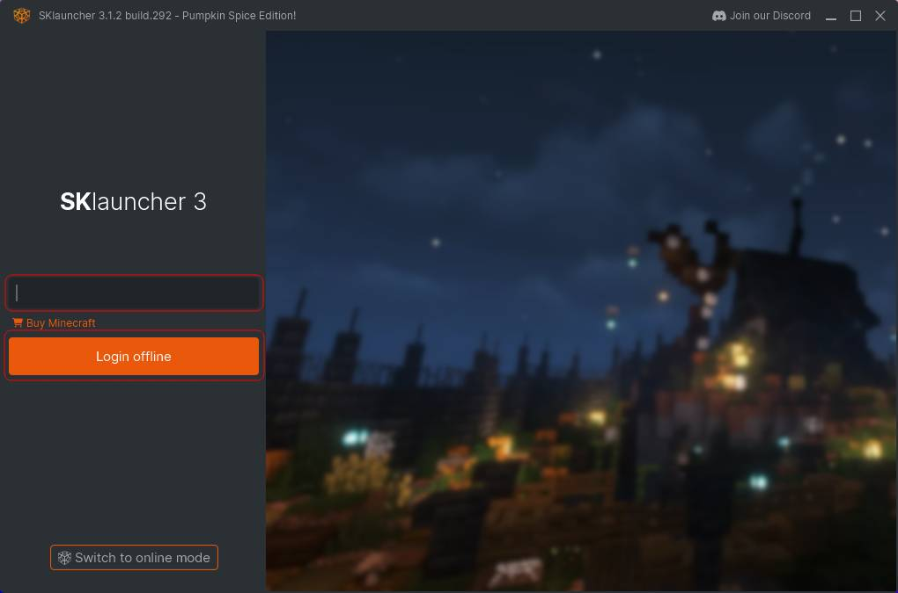

Лаунчер
Як рекомендація, буде використано SKlauncher, але підійде будь який лаунчер.
3. Кастомізація
Перейти за посиланням.
Обрати нік. Натиснути Save changes.
За бажанням можна додати текстури скіну та плащу.
4. Завантажити лаунчер
Необхідно вимкнути AdBlock.
Перейти за посиланням та завантажити лаунчер.
Створити дві папки: для лаунчра та для клієнта. Помістити скачаний лаунчер в створену папку.
5. Офлайн режим
Відкрити лаунчер. Натиснути Switch to offline mode.
6. Логін
Ввести нік, обраний в П.3. Натиснути Login offline.

7. Додати клієнт
Натиснути на "+" поряд з Installation Manager.
8. Налаштувати клієнт
- Installation Name: Будь яке. Наприклад "Western"
- Version: Vanilla
- Release: 1.20.1
- Game Directory: Створена в П.4 папка для клієнта
- Resolution: За бажанням
Натиснути Save.
9. Запустити клієнт
За бажанням можна змінити мову лаунчера в меню Launcher settings.
Обрати щойно створений клієнт зі списку. Натиснути Play.